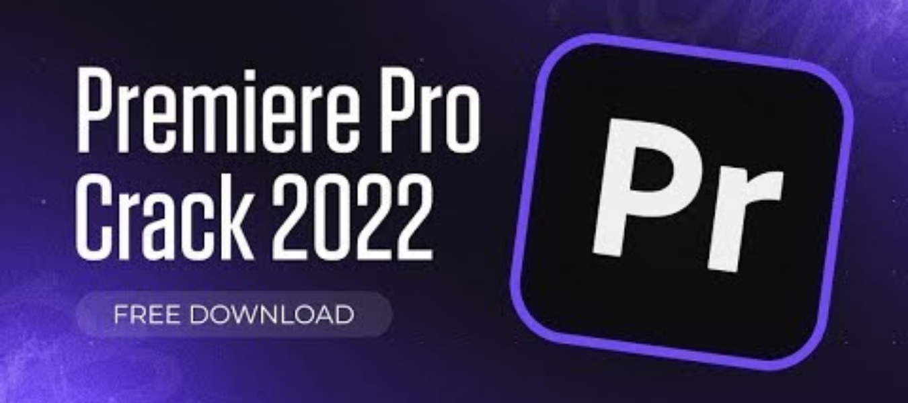
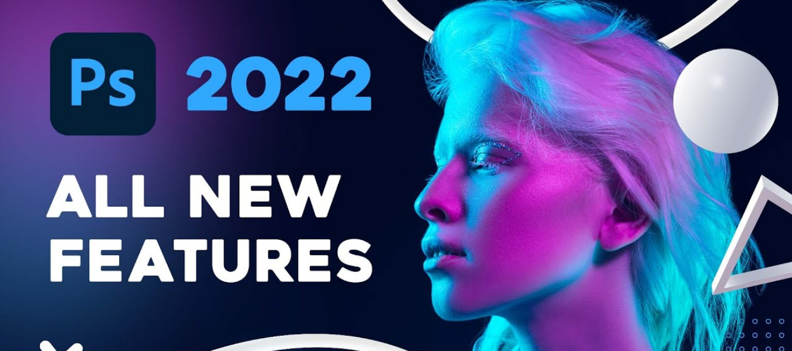
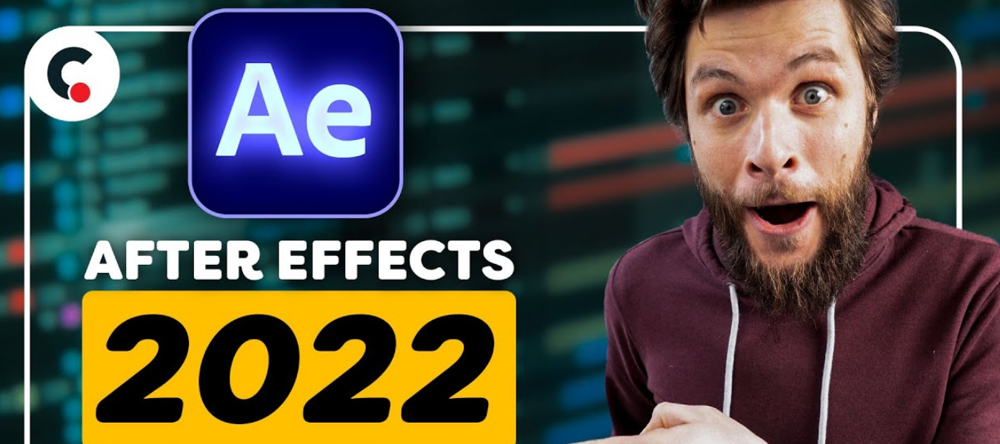
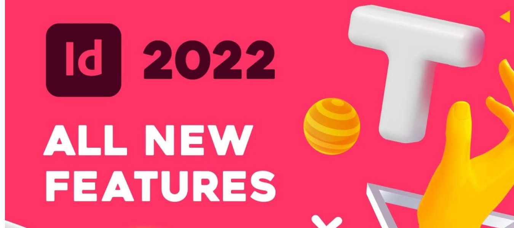

Full apps pc

Versi terbaru dari software Adobe Premiere Pro 2022 berguna untuk membuat film dan video bagus sob dengan bantuan Adobe Premiere Pro 2022 Full Version. Dimana Adobe Premiere Pro 2022 Final adalah keluaran versi terbaru dari Adobe Premiere Pro 2022 dapat membuat dan mengedit film dengan hasil yang maksimal cepat dan mudah. Adobe Premiere Pro 2022 Crack juga mendukung sistem 64-bit sehingga lebih cepat dan kinerja yang lebih optimal. Selain itu kelebihan Adobe Premiere Pro 2022 Offline mendukung beberapa prosesor sehingga proses rendering akan lebih cepat.
| GAME | SIZE | LINK DOWNLOAD |
|---|---|---|
| Adobe Premiere Pro 2022 | 2 GB | |

Adobe Photoshop 2022 Full Version – merupakan sebuah aplikasi editing foto terbaik buatan adobe yang sudah banyak dipakai oleh orang – orang di seluruh dunia. Banyaknya fitur – fitur canggih yang diberikan membuat aplikasi ini makin banyak diminati oleh para editor baik itu digunakan untuk upload ke sosial media seperti instagram, facebook, twitter dan semua yang membutuhkan gambar. Terkadang foto – foto yang diluar nalar tercipta dari hasil manipulasi aplikasi photoshop baik itu mobile maupun di pc. mempunyai estabilitas yang tinggi
| GAME | SIZE | LINK DOWNLOAD |
|---|---|---|
| Adobe Photoshop 2022 | 1,2 GB | |

Adobe After Effects 2022 Final juga memiliki segudang efek yang dapat Anda gunakan untuk mempercantik film dan video yang sudah di buat. Selain itu, Adobe After Effects CC 2022 Offline juga memiliki antarmuka yang menarik dan mudah diimplementasikan dengan dukungan penuh untuk Windows 11 membuat Adobe lebih bagus. Adobe After Effects 2022 Crack juga menggunakan mesin terbaru sehingga proses efek dan kinerja yang lebih baik dari versi sebelumnya.
| GAME | SIZE | LINK DOWNLOAD |
|---|---|---|
| Adobe After Effects 2022 | 3 GB | |

Anda ingin membuat sebuah buku, poster atau majalah dengan mudah dan profesional. Gunakan saja Adobe InDesign 2022 Full Version, software yang satu ini mampu melakukan semua sob namanya Adobe InDesign 2022 Final. Adobe InDesign 2022 dapat mengedit dan membuat berbagai desain buku, majalah, poster dan lainnya dengan keren dan bagus. Selain itu Adobe InDesign 2022 Crack juga dapat membuat banyak pola gambar yang tidak biasa .
| GAME | SIZE | LINK DOWNLOAD |
|---|---|---|
| Adobe InDesign 2022 | 2 GB | |